3. Pengajuan
Input Data Kendaraan Baru oleh Wajib Pajak
Deskripsi
Fitur ini memungkinkan Wajib Pajak untuk mengajukan pendaftaran kendaraan baru beserta berkas persyaratannya.
Prasyarat
- Akun Wajib Pajak aktif dan/atau akun admin samsat dan berhasil login
Langkah-Langkah
Langkah 1 — Login sebagai Wajib Pajak atau sebagai admin samsat
Masuk ke sistem menggunakan akun Wajib Pajak atau akun admin samsat.
Langkah 2 — Buka Menu Buat Pengajuan
Navigasi ke menu Buat Pengajuan pada navigasi utama.
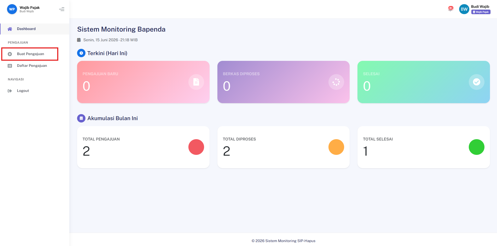
Langkah 3 — Isi Formulir Data
Lengkapi formulir data pemilik dan data kendaraan yang tersedia.
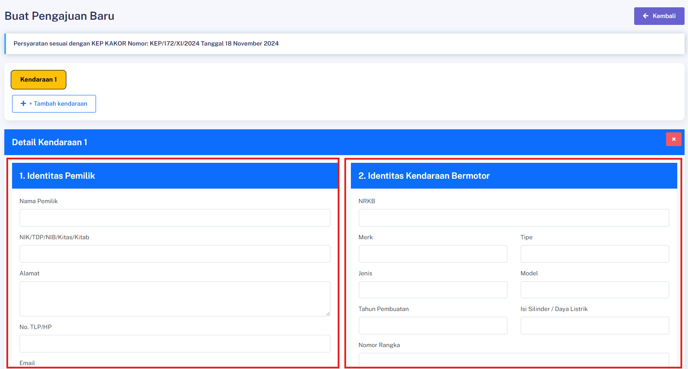
Langkah 4 — Upload Berkas Persyaratan
Unggah seluruh berkas yang diperlukan:
| No | Berkas |
|---|---|
| 1 | Surat Permohonan |
| 2 | Surat Pernyataan |
| 3 | KTP |
| 4 | BPKB |
| 5 | TBPKP |
| 6 | Cek Fisik |
| 7 | Foto Ranmor |
| 8 | STNK |
⚠️ Pastikan semua berkas terbaca jelas dan dalam format yang didukung sistem.
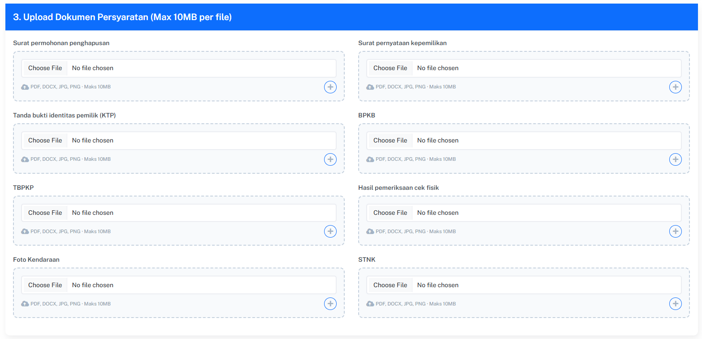
Langkah 5 — Tambahkan Kendaraan (jika perlu))
Klik tombol Tambah Kendaraan untuk menambahkan kendaraan lain dan lengkapi seluruh berkas yang diperlukan.
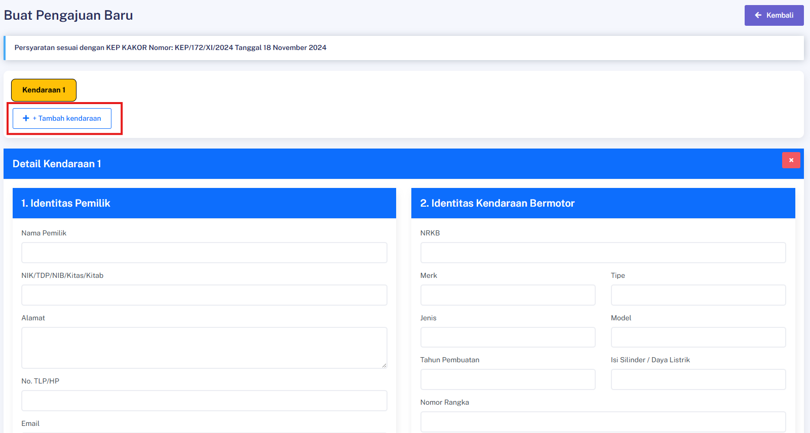
Langkah 6 — Kirim Pengajuan
Klik tombol Simpan & Kirim untuk mengirimkan pengajuan.
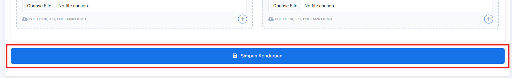
Hasil yang Diharapkan
- Pengajuan berhasil dikirim dan masuk ke sistem dengan status awal.
Melihat Daftar Pengajuan Saya (WP)
Deskripsi
Fitur ini memungkinkan Wajib Pajak untuk melihat seluruh pengajuan yang pernah dibuat.
Prasyarat
- Login sebagai Wajib Pajak dan sudah memiliki minimal 1 pengajuan
Langkah-Langkah
Langkah 1 — Login sebagai Wajib Pajak
Masuk ke sistem menggunakan akun Wajib Pajak.
Langkah 2 — Buka Menu Daftar Pengajuan
Navigasi ke:
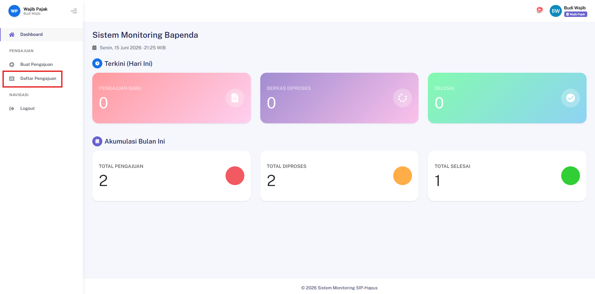
Hasil yang Diharapkan
- Sistem menampilkan daftar seluruh pengajuan milik Wajib Pajak yang sedang login.
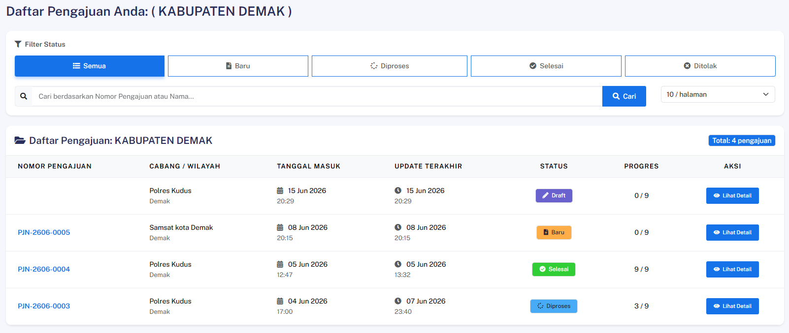
Melihat Daftar Manajemen Pengajuan (Admin/Petugas)
Deskripsi
Fitur ini memungkinkan petugas (Samsat, Polda, Bapenda, Jasa Raharja) untuk melihat dan mengelola seluruh pengajuan yang masuk.
Prasyarat
- Login sebagai petugas dengan permission
view_menu_manajemen_pengajuan
Langkah-Langkah
Langkah 1 — Login sebagai Petugas
Masuk ke sistem menggunakan akun petugas yang berwenang.
Langkah 2 — Buka Menu Manajemen Pengajuan
Navigasi ke:
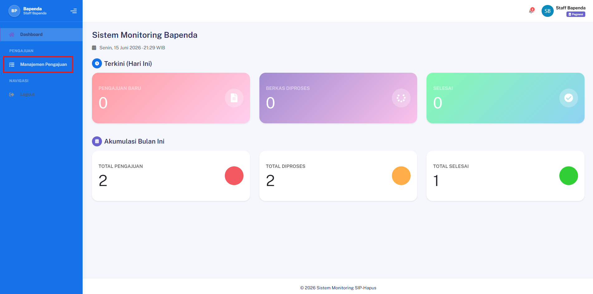
Hasil yang Diharapkan
- Sistem menampilkan daftar seluruh pengajuan yang dapat dikelola sesuai kewenangan role petugas.
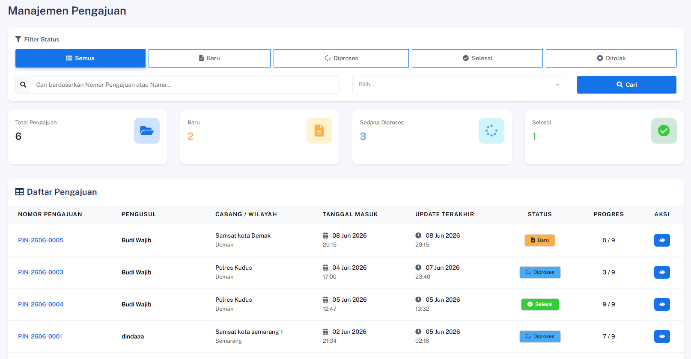
Melihat Detail Pengajuan
Deskripsi
Fitur ini memungkinkan pengguna untuk melihat informasi lengkap dari sebuah pengajuan.
Prasyarat
- Login sebagai pengguna yang berwenang, pengajuan tersedia
Langkah-Langkah
Langkah 1 — Buka Daftar Pengajuan
Akses halaman daftar pengajuan sesuai role (WP atau Admin).
Langkah 2 — Pilih Pengajuan
Klik salah satu pengajuan dari daftar untuk melihat halaman detailnya.
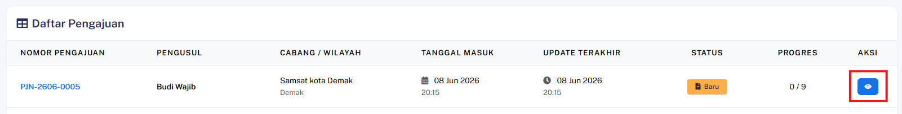
Hasil yang Diharapkan
- Halaman detail menampilkan seluruh informasi pengajuan, termasuk data kendaraan, berkas, dan status terkini.
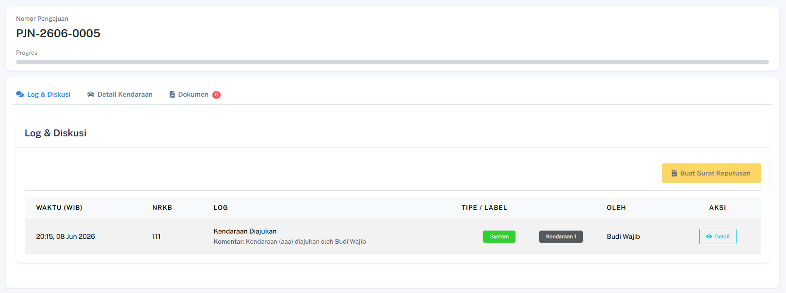
Hapus Pengajuan
Deskripsi
Fitur ini memungkinkan Admin untuk menghapus pengajuan dari sistem.
Prasyarat
- Login sebagai Admin
Langkah-Langkah
Langkah 1 — Buka Manajemen Pengajuan
Akses halaman manajemen pengajuan pada sistem.
Langkah 2 — Klik Hapus Pengajuan
Klik tombol Hapus Pengajuan pada data yang ingin dihapus.
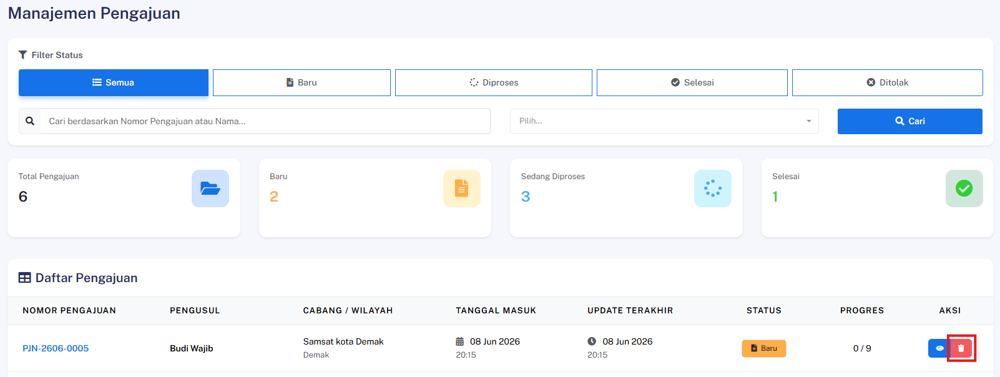
Langkah 3 — Konfirmasi Penghapusan
Konfirmasi tindakan penghapusan pada dialog konfirmasi yang muncul.
Hasil yang Diharapkan
- Pengajuan berhasil dihapus dari database dan muncul pesan sukses.
Melihat Log Aktivitas per Kendaraan
Deskripsi
Fitur ini memungkinkan pengguna untuk melihat riwayat aktivitas dan diskusi terkait suatu pengajuan.
Prasyarat
- Login sebagai pengguna yang berwenang, pengajuan memiliki log aktivitas
Langkah-Langkah
Langkah 1 — Buka Detail Pengajuan
Akses halaman detail pengajuan yang ingin diperiksa log-nya.
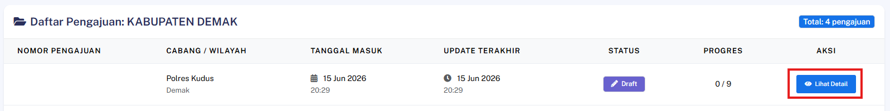
Langkah 2 — Buka Tab Log & Diskusi
Klik tab Log & Diskusi pada halaman detail pengajuan.
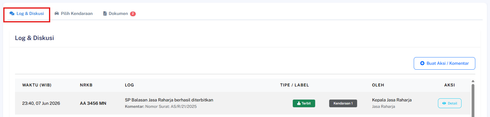
Langkah 3 — Lihat Detail Log
Klik salah satu entri log untuk melihat informasi lengkapnya.
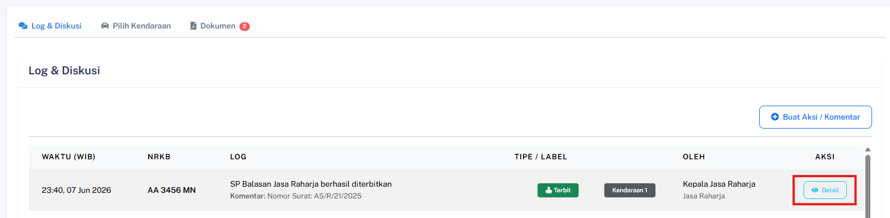
Hasil yang Diharapkan
- Sistem menampilkan detail aktivitas pada log yang dipilih, termasuk waktu, pelaku, dan keterangan perubahan.
Penerimaan SK Lengkap & Selesai oleh WP
Deskripsi
Fitur ini memungkinkan Wajib Pajak (WP) untuk melihat, mengunduh seluruh dokumen Surat Keputusan (SK) resmi yang telah diterbitkan oleh masing-masing instansi terkait, serta menandakan bahwa proses pencabutan pajak telah rampung.
Prasyarat
- Pengguna telah login ke dalam sistem sebagai Wajib Pajak
- Seluruh dokumen Surat Keputusan (SK) dari pihak Polda, Bapenda, dan Jasa Raharja telah selesai diterbitkan oleh petugas terkait
Langkah-Langkah
Langkah 1 — Akses Halaman Detail Pengajuan
Buka menu Pengajuan, lalu pilih pengajuan aktif Anda untuk masuk ke halaman detail pengajuan.
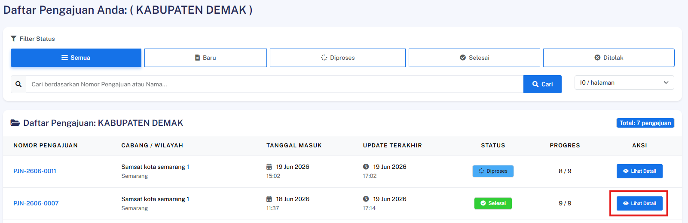
Langkah 2 — Buka Menu Lampiran Dokumen
Navigasi ke bagian Dokumen pada halaman detail tersebut.
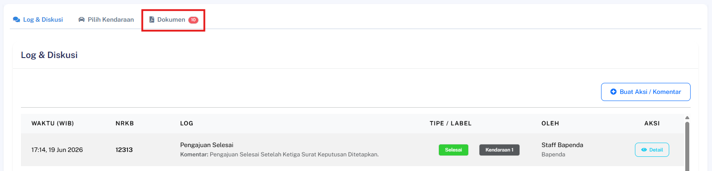
Langkah 3 — Unduh Berkas Surat Keputusan
Klik tautan atau tombol unduh yang tersedia pada masing-masing berkas, yaitu SK Polda, SK Bapenda, dan SK Jasa Raharja.
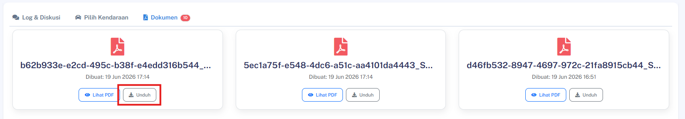
Hasil yang Diharapkan
- Wajib Pajak berhasil melihat daftar berkas dan mengunduh ketiga dokumen SK tersebut secara lengkap tanpa kendala.
- Status akhir dari proses pengajuan pencabutan pajak secara otomatis diperbarui dan dinyatakan Selesai oleh sistem.